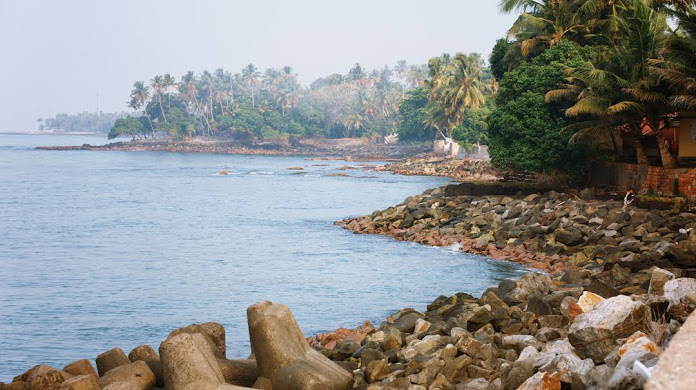

ASHTAMUDI LAKE
Ashtamudi Lake, in the Kollam District of the Indian state of Kerala, is the most visited backwater and lake in the state. It possesses a unique wetland ecosystem and a large palm-shaped water body, second only in size to the Vembanad estuary ecosystem of the state. Ashtamudi means 'eight braids' in the local Malayalam language. The name is indicative of the lake's topography with its multiple branches.

KOLLAM BEACH
Kollam Beach, also known as Mahatma Gandhi Beach, is a beach at Kollam city in the Indian state of Kerala. Kollam Beach is the first 'Beach Wedding Destination' in Kerala. The beach also features a park of international standard, the Mahatma Gandhi Park, which was inaugurated on 1 January 1961 by the then Vice President of India, Zakir Hussain. Kollam beach is one among the few beaches in Kerala with a lifeguard outpost. Lifeguards were stationed at the beach from 2005. As of July 2015 Kovalam, Kollam is one among the three beaches in south Kerala with lifeguard outposts.

THEVALLY PALACE
Thevally Palace or Thevalli Palace is a popular heritage Palace situated at the banks of Ashtamudi lake, in Thevally, Kollam city. It is an important historic monument in the state of Kerala in India. Thevally Palace was built in between 1811 and 1819 the reign of Gowri Parvati Bayi. It is considered as a Hallmark of Kollam City. Now the palace is used as the NCC Group Headquarters of Kollam district. The palace and its premises are now owned by PWD .